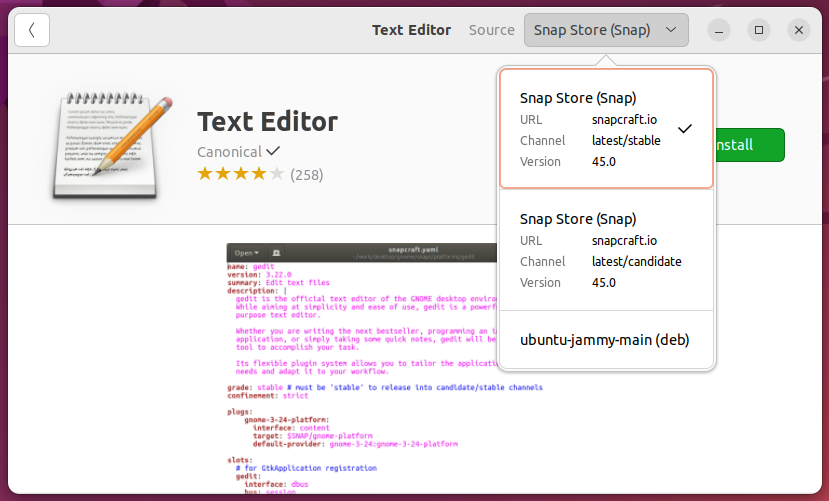

Cross-distro

Kuvio 1: Ubuntu Software store. Useimmat ohjelmat, kuten Text Editor, voi asentaa Snap Storesta. Joskus vaihtoehtona näkyy ATP, kuten kuvakaappauksessa (ubuntu-jammy-main, joka viittaa apt repositorioon main, versioon jammy eli tässä tapauksessa 22.04)
Aiemmin mainittujen, tiettyyn distribuutioon (tai sen jälkiläisiin) sidottujen paketinhallintajärjestelmien lisäksi on olemassa myös järjestelmiä, jotka toimivat useissa eri distribuutioissa. Näistä esitellään lyhyesti alla kolme: Flatpak, AppImage ja Snap, joista jälkimmäiseen viitataan myös yllä näkyvässä Kuvio 1:ssä. Helpon asennuksen lisäksi useimmat näistä pyrkivät tarjoamaan turvallisuuteen liittyviä ominaisuuksia joko siten, että ohjelma voidaan asentaa ja ajaa lokaalisti käyttäjän omilla tunnuksilla ja oikeuksilla, tai siten, että ohjelma ajetaan konttia muistuttavassa sandbox-ympäristössä.
AppImage
AppImage on äärimmäisen yksinkertainen paketti käyttää. Toisin kuin muut tässä dokumentissa mainitut paketinhallintajärjestelmät, AppImage ei asenna mitään minnekään, eikä paketinhallinta itsessään vaadi minkään sortin asentamista.
Vaiheet ovat näinkin simppelit:
- Etsi haluamasi sovellus AppImageHubista, kuten vaikkapa e-kirjojen lukemiseen soveltuva Calibre.
- Lataa tuore versio ohjelmisto .
# Navigoi kotikansiosi lokaalien sovellusten hakemistoon
$ cd ~/.local/bin/
# Siirrä tiedosto latauskansiosta
$ mv ~/Downloads/Calibre-x86-64-20230918202913.AppImage calibre.AppImage
# Tee tiedostosta ajettava ja aja se
$ chmod u+x calibre.AppImage
$ ./calibre.AppImage
Sovellusvalikoima on kuitenkin AppImagessa ainakin kirjoitushetkellä huomattavasti suppeampi kuin kilpailijoissa, ja lisäksi ARM-prosessorille soveltuvia sovelluksia on merkittävästi vähemmän kuin x84_64:lle.
Flatpak
Flatpakin itsensä voi asentaa Ubuntuun Flatpakin ohjeiden mukaisesti komennolla:
Flatpakin avulla asennettavia ohjelmia voi etsiä Flathub:sta. Repositorion itsensä ja ohjelmat voi asentaa joko käyttäjän omiin hakemistoihin tai järjestelmänlaajuisesti. Tämä asetetaan --user- tai --system-flagilla. Näistä jälkimmäinen on default, ja se vaatii sudo-oikeudet.
Esimerkiksi HandBrake CLI:n, jolla voi muun muassa enkoodata videotiedostoja, voi asentaa ilman sudo-oikeuksia näin:
# Lisää Flatpak repo
$ flatpak --user remote-add \
--if-not-exists flathub \
https://dl.flathub.org/repo/flathub.flatpakrepo
# Lokaalista tiedostosta
$ flatpak --user install HandBrakeCLI-1.4.2-x86_64.flatpak
Tai kenties haluat eroon Snapin hallitsemasta Firefoxista ja siirtyä Flatpakin asentamaan ja hallitsemaan chromiumiin?
# Poista Snap koko järjestelmästä. Ethän tee tätä koneilla, joilla muut käyttäjät saattavat haluta käyttää Firefoxia. Se oikeasti poistuu.
$ sudo snap remove firefox
# Asenna Chromium
$ sudo flatpak install flathub org.chromium.Chromium
Warning
Saatat joutua lisäämään remote-add:llä repositorion erikseen system-wide. Päättele, millä komennolla tämä hoituu käyttäen yllä näkyvää user-wide esimerkkiä.
Yllä olevan komennon jälkeen sinun pitää logata ulos ja sisään Gnomesta (tai muusta työpöytäympäristöstä.) Tämän jälkeen voit painaa Win (tai Cmd) näppäintä, etsiä Chromiumin, ja joko käynnistää sen tai lisätä sen hiiren oikealla korvalla Favoritesiin, missä Firefox todennäköisesti aiemmin oli.
Flatpak eristää sovellukset muusta käyttöjärjestelmästä omiin sandboxeihin. Lue lisää siitä, kuinka Flatpak toimii konepellin alla: Under the Hood — Flatpak documentation
Snap
Snap-ohjelmaan liittyvät seuraavat termit:
| Termi | Selitys |
|---|---|
| Snap | Applikaatio-bundle, joka sisältää kaikki tarvittavat riippuvuudet. |
| Snapd | Taustalla ajettava daemon eli service, joka huolehtii asennetuista snapeista. |
| Snap Store | Alusta tai katalogi, joka löytyy verkosta, ja johon snapit lähetetään käyttäjien ladattaviksi. |
| Snapcraft | Ajettavan komennon ja frameworkin nimi. |
Snap eristää ohjelmat muusta käyttöjärjestelmästä omiin sandboxeihin:
To support this, each package is sandboxed so that it runs in a constrained environment, isolated from the rest of the system – this is achieved via a combination of AppArmor, seccomp, mount namespaces, cgroups and traditional UNIX permissions. -- Ubuntu.com
Canonical on sekä Snapcraftin että Ubuntun takana. Siispä ei liene liene yllätys, että snap on Ubuntussa valmiiksi asennettuna. Mikäli käytät jotakin toista distribuutiota, jossa snap ei ole vakiona asennettuna, etsi ohje mieluiten suoraan työkalun omasta dokumentaatiosta, kuten: Installing the daemon. Ohjelmien listaaminen ja asentaminen on helppoa, katso komennot alta:
Tip
Huomaa, että paketit asennetaan /snap-hakemistoon eikä tyypilliseen /usr/bin-hakemistoon. Esimerkiksi firefoxin löytää /snap/bin/firefox-polusta. Tiedosto /usr/bin/firefox löytyy $PATH:sta, mutta jos ajat komennon file /usr/bin/firefox, näet, että se on ihan vain ASCII shell script. Tiedosto itsessään ajaa /snap/bin/firefox-tiedoston. Tämä sen sijaan on symbolinen linkki /usr/bin/snap-tiedostoon, joka on itse asiassa binääri. Tämä binääri nuuhkii argumentit ($0) ja suorittaa oikean ohjelman.
Ohjelmia ei ole tarpeellista päivittää käsin. Ne voi päivittää sudo snap refresh-komennolla, mutta snap tekee tämän automaattisesti vakiona 6 tunnin välein.
Huomaa, että tämä lyhyt ohje on todellakin vain lyhyt ohje. Snapin käyttöön liittyy paljon muutakin, kuten esimerkiksi oikeuksien hallinta, joka on toteutettu käyttämällä interfaces, tai snapshots, joka sallii ohjelmien palauttamisen aiempaan tilaan. Lisäksi snap:llä asennetut palvelut ovat hallittavissa services-komennolla. Näihin toiminnallisuuksiin voit tutustua Snap how-to guides-sivulla.
Tehtävät
Tehtävä: Asenna snap:llä
Käyttäen komentoriviä, asenna valitsemasi ohjelma Canonicalin "app storesta" eli SnapCraftista.
Tehtävä: Snap-sovellusten lokaatio
Selvitä, missä hakemistossa asentamasi snap-sovellus sijaitsee.
Tehtävä: Asenna Flatpakilla
Asenna Flatpak. Tutustu Flatpakin tarjontaan ja valitse sinua kiinnostava ohjelma. Asenna se käyttäen Flatpakia.
Huomaa, että monet ohjelmat voi asentaa useasta eri lähteestä. Esimerkiksi OBS Studio on saatavilla sekä Flathubista että Snapcraftista että PPA:sta, joka on sinulle tuttu aiemmista tehtävistä.
Apua valintaan?
Jos et osaa yhtään päättää, mitä asentaisit, kenties jokin näistä kiinnostaa sinua:
- GPU Screen Recorder. Hyödyllinen, yksinkertainen ohjelma, joka tekee saman kuin OBS Studio, mutta hyödyntäen Nvidia, AMD tai Intel GPU:ta. Tämä voi kiinnostaa sinua, jos sinulla on oikean raudan päälle asennettu Linux.
- Picocrypt. Ohjelma, joka salaa ja purkaa tiedostoja. Hyödyllinen, jos haluat pitää tiedostosi turvassa.
- Vieb. Minimalistinen selain.
- Ignition. Ohjelma, joka mahdollistaa ohjelmien tai skriptien ajamisen loginin yhteydessä yksikertaisen UI:n kautta.
- Gaia Sky. Ohjelma, joka visualisoi galaksin ja sen sisällön. Pääset lentelemään pitkin linnunrataa 3D:nä.
- PySoIFC. Yli 1300 erilaista korttipeliä yhdessä ohjelmassa.
- Darktable. RAW-kuvien käsittelyyn tarkoitettu digitaalinen pimiö. Kilpailija siis Lightroomille tai Capture Onelle.
- Tangram. Selain, joka keskitty Web Appien eristämiseen toisistaan, joka helpottaa esim. Gmail tai Teams:n Web Appien käyttöä, jos sinulla on useita eri tilejä.
Ohjelmat on valittu Linux Format lehden April 2025 numerosta (Hot Picks -osiosta).
Tehtävä: Flatpak-sovellusten lokaatio
Selvitä, missä hakemistossa asentamasi Flatpak-sovellus sijaitsee.
Tehtävä: Asenna Go
Joidenkin ohjelmien tyypillinen asennustapa on purkaa binäärit suoraan oikeaan lokaatioon. FSH:n mukaan tähän sopii /usr/local/bin-hakemisto. Yksi näin asennettavista ohjelmista on Go. Kyseessä on Googlen kehittämä ohjelmointikieli ja siihen liittyvä Go Tool CLI-työkalu. Kieltä hyödyntävät Googlen lisäksi Meta, Dropbox, Paypal ja monet muut.
Asenna Go Download and install-sivuston ohjeiden mukaisesti.
Vinkki: Huomaa, että &&-komentojen jälkeen alkaa uusi komento. Jos käytät sudo-komentoa, seuraava komento saattaa vaatia uuden sudo-kutsun.
Vinkki: Mihin tiedostoon PATH-ympäristömuuttujan lisäys kannattaa tehdä, jos sinulla ei olekaan Bash käytössä vaan Zsh? Tarkista Startup-tiedostot-tunnin materiaaleista, mikä kotikansion tiedosto on nimenomaan Z-shellin ENV:iä varten.
Kun olet saanut Go:n asennettua onnistuneesti, kannattaa tehdä se, mikä tehdään aina uuden ohjelmointikielen äärellä: hello world -ohjelma! Tämä onnistuu seuraavanlaisesti. Luo alkuun tiedosto, joka sisältää go-kielistä lähdekoodia:
Tämän jälkeen aja tiedosto komentoriviltä:
Nyt voit aloittaa uuden ohjelmointikielen opiskelun. Fantastista, eikö? 🎉